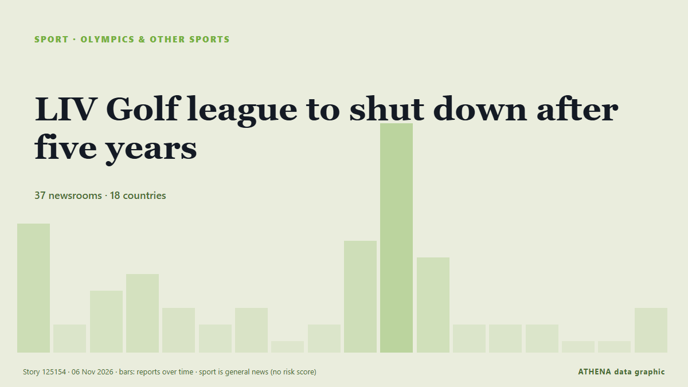

LIV Golf league to shut down after five years

BC Partners reportedly walks away after player exodus LIV set to appear at bankruptcy hearing on Thursday The rebel LIV Golf tour’s attempt to relaunch itself after filing for bankruptcy has… из Guardian Business
Независимые источники: 37 изданий в 18 странах, с 4 нояб.; первым сообщил ESPN; освещение идёт на спад. Спорт и культура публикуются без оценки риска. Уверенность — 87 % (высокая); подтверждают независимые источники: 37 изданий, средняя надёжность источников — 72 %. СМИ по странам: Великобритания (9), Соединенные Штаты (7), Австралия (5). Освещение: с 4 нояб. по 5 нояб., 22 ч.
Что изменилось: 32 новых сообщений от 28 редакций за 24 часа до 6 нояб..
Первый заголовок: Sources: BC Partners pulls out of financing deal in major blow to LIV Golf 2.0
Заголовки приводятся на английском языке, как они были опубликованы.
Коротко в цифрах
Отобрано, оценено и написано по опубликованной методологии ATHENA. Ни один редактор не вмешивается в отдельные события. Как это создаётся ›
| 04 Nov 21:50 UTC | 7 |
|---|---|
| 04 Nov 23:50 UTC | 1 |
| 05 Nov 01:50 UTC | 3 |
| 05 Nov 03:50 UTC | 4 |
| 05 Nov 05:50 UTC | 2 |
| 05 Nov 07:50 UTC | 1 |
| 05 Nov 09:50 UTC | 2 |
| 05 Nov 11:50 UTC | 0 |
| 05 Nov 13:50 UTC | 1 |
| 05 Nov 15:50 UTC | 6 |
| 05 Nov 17:50 UTC | 13 |
| 05 Nov 19:50 UTC | 5 |
| 05 Nov 21:50 UTC | 1 |
| 05 Nov 23:50 UTC | 1 |
| 06 Nov 01:50 UTC | 1 |
| 06 Nov 03:50 UTC | 0 |
| 06 Nov 05:50 UTC | 0 |
| 06 Nov 07:50 UTC | 2 |
Откуда эти цифры
Значимость
Риск
Уверенность
Освещение — кто сообщил и когда
заголовок в оригинале · открывает источник- ESPN · Соединенные ШтатыSources: BC Partners pulls out of financing deal in major blow to LIV Golf 2.0
- ABC News Australia · АвстралияLIV Golf future in doubt as premier says Australia event likely cancelled
- Sydney Morning Herald · Австралия‘Game, set and match’: LIV Golf on the brink as investor pulls out
- Sydney Morning Herald · АвстралияLifeline collapses for LIV Golf
- Forbes Business · Соединенные ШтатыMajor Setback For LIV 2.0 As BC Partners Pulls Out Of Financing Deal
- Guardian Business · ВеликобританияLIV Golf’s attempted relaunch collapses after new lead investor withdraws, reports say
- Free Malaysia Today · МалайзияLIV Golf relaunch collapses as key investor withdraws
- Korea Herald · Республика КореяLIV's financial backer drops plans for new league in 2027
- CNBC World · Соединенные ШтатыLIV Golf faces liquidation after BC Partners scraps rescue plan
- Ada Derana · Шри-ЛанкаLIV Golf to wind down after backers withdraw support
- Arabian Business · ОАЭLIV Golf’s $7bn Saudi gamble faces collapse as rescue investor walks away
- The National · ОАЭLIV Golf faces liquidation as $300m rescue deal collapses
- Daily Maverick · Южно-Африканская РеспубликаLIV Golf rescue plan falters as BC Partners abandons investment, FT reports
- Arab News · Саудовская АравияLIV Golf relaunch collapses as key investor withdraws: reports
- Nile Post · УгандаLIV to wind down after backers withdraw support
- Belfast Telegraph · ВеликобританияLIV supposedly wasn’t about the money, so why did NI golf legend Graeme McDowell cash in his chips after the Saudi Arabia gravy train left the station?
- Gulf News · ОАЭLIV Golf on brink of collapse as McIlroy slams breakaway league again
- eNCA · Южно-Африканская РеспубликаLIV Golf relaunch collapses as key investor withdraws: reports
- The Scotsman · ВеликобританияLIV golf: 'Game, set and match' for breakaway circuit as £200m deal hits buffers
- BusinessWorld · ФилиппиныLIV Golf faces liquidation after losing financial backing
- Sky Sports · ВеликобританияIs this the end of the road for LIV Golf?
- The Canadian Press (via CityNews) · КанадаLIV Golf is winding down operations, lawyer says in bankruptcy hearing
- Sky Sports · ВеликобританияLIV Golf to wind down
- CBC News (alternative feed) · КанадаLIV Golf shutting down operations, lawyer says in bankruptcy hearing
- CNA (Channel NewsAsia) · СингапурLIV Golf winding down operations after financing deal falls apart
- Forbes Business · Соединенные ШтатыLIV Golf Is Shutting Down And Liquidating Assets
- RTÉ News · ИрландияLIV Golf to be liquidated as financing deal collapses
- ESPN · Соединенные ШтатыLIV Golf calls it quits, to shutter league without financial support for 2.0 model
- Sportstar · ИндияLIV Golf files for bankruptcy, citing a lack of financial support
- Gulf News · ОАЭLIV Golf to shut down after five years as $300 million rescue plan collapses
- Global News (World) · КанадаLIV Golf set to wind down operations, lawyers say
- Belfast Telegraph · ВеликобританияLIV Golf to shut down after last-ditch financing deal falls through
- The Irish News (Belfast) · ВеликобританияLIV Golf to shut down after last-ditch financing deal falls through
- Variety · Соединенные ШтатыSaudi-Backed LIV Golf, After Five Years of Trying to Challenge PGA Tour, Is Shutting Down
- Indian Express · ИндияWhy LIV Golf, which shook up sport in 2022 with Saudi Arabia money, is winding down
- Deadline · Соединенные ШтатыLIV Golf Shutting Down After Last-Ditch Financing Plan Fails
- Sydney Morning Herald · АвстралияLIV Golf enters liquidation
- Sky News (World) · ВеликобританияBreakaway league LIV Golf to fold after filing for bankruptcy
- Sky Sports · ВеликобританияLIV Golf: Timeline from big beginnings to liquidation
- The Age · АвстралияSmith’s future unclear as LIV Golf moves to liquidate